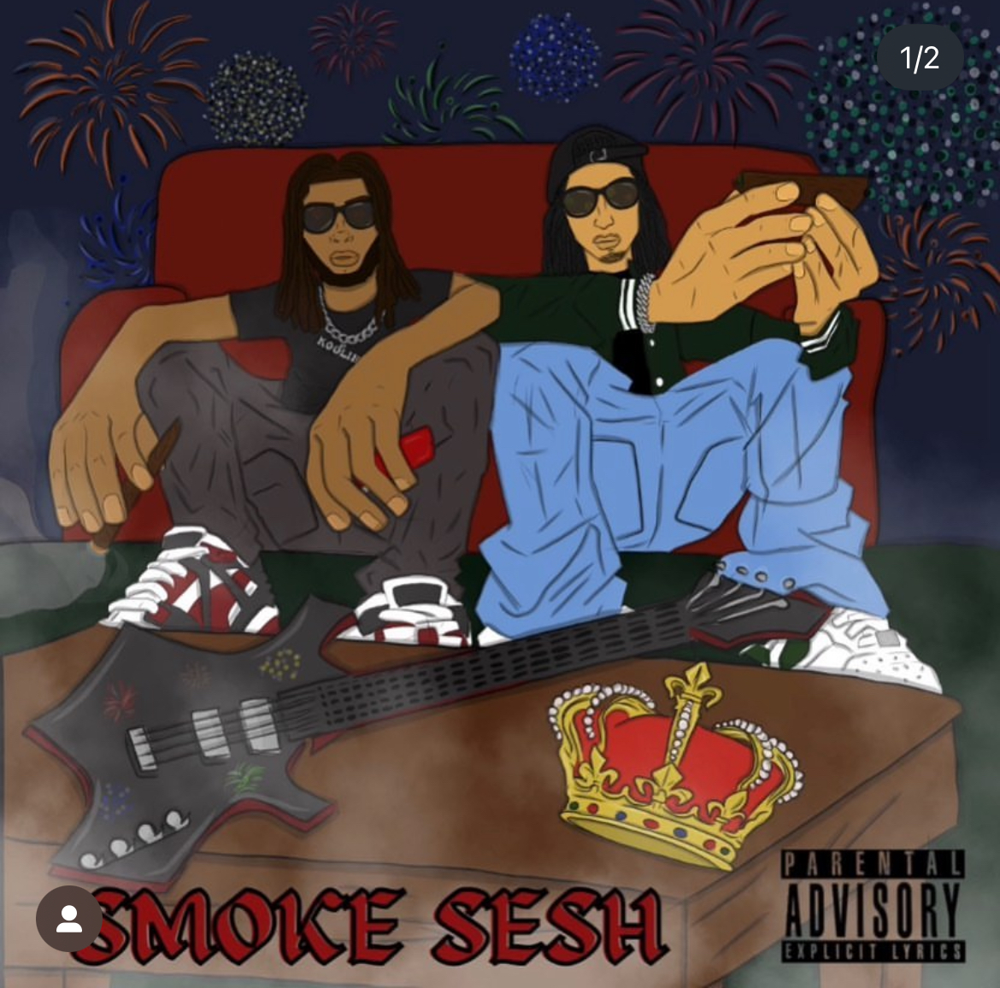
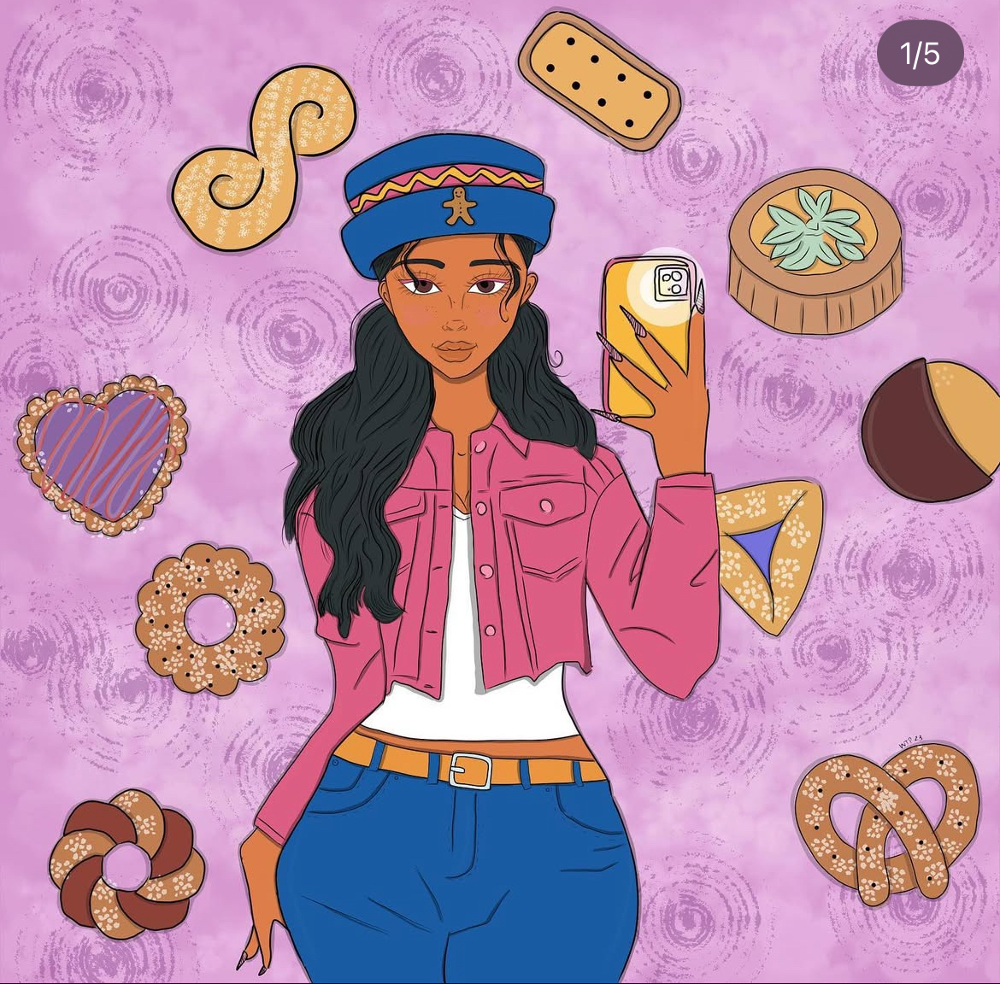

Waleska Tirado Pacheco
📍 Deltona, FL | 📧 wt.illustrates@gmail.com | 📞 (689) 313-1365
Creative Graphic Designer & Digital Artist
Bringing visions to life through bold, innovative, and engaging visual storytelling.
About Me
I am a passionate graphic designer and digital artist with a deep love for creativity, branding, and digital storytelling. My journey into digital art began with photography courses at Lake Mary High School (2016-2018), where I developed a strong foundation in visual composition and creative expression. This experience sparked my passion for graphic design and digital media, leading me to specialize in branding, digital illustrations, album covers, promotional content, and web design.
Through my business, WT Illustrates, I work with artists and entrepreneurs to create bold and engaging visuals that enhance their brand presence. My expertise in Adobe Creative Suite, Procreate, and digital marketing allows me to produce high-quality, visually striking designs that captivate audiences. My Beacons Business Page showcases my diverse work, including album covers, promotional videos, branding projects, and more.

